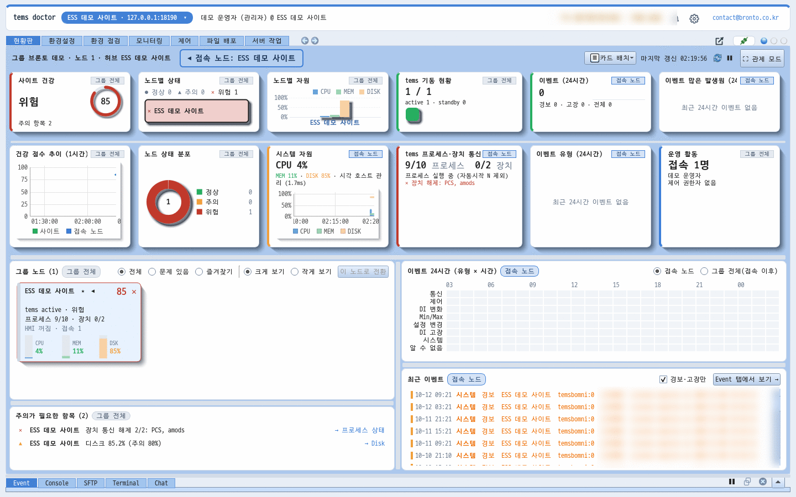
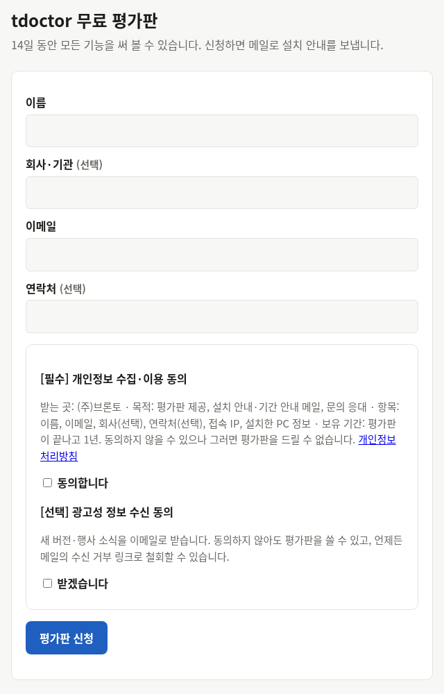
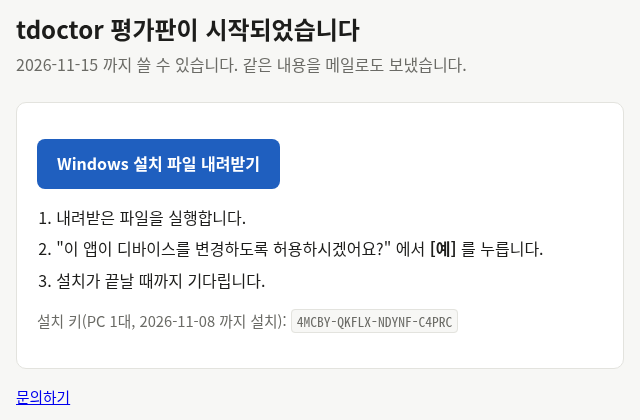

tdoctor 무료 평가판
14일 동안 Pro 의 모든 기능을 무료로.
tems 서버를 원격으로 운영하는 tOps 의 운영자 화면 tdoctor 를 직접 써 보세요.
이름과 이메일만 넣으면 메일로 받은 설치 파일 하나로 설치가 끝납니다. 설치 키를 따로 넣을 필요도 없습니다.
신청 화면은 브론토의 배포 서버 update.ess.center 에서 열립니다.

신청부터 설치까지 4단계, 5분이면 됩니다
평가판은 정해진 정책으로 바로 열립니다. 담당자의 승인을 기다리지 않습니다.
신청
[평가판 신청하기]를 눌러 이름·이메일을 쓰고(회사·연락처는 선택) 개인정보 수집·이용에 동의합니다.
이메일 인증
메일 "[tdoctor] 평가판 이메일 확인"의 링크를 열고 [평가판 시작]을 누릅니다.
설치 파일 받기
[Windows 설치 파일 내려받기]를 누릅니다. 같은 링크가 메일로도 옵니다. 설치 키는 7일 동안 PC 1대에 쓸 수 있습니다.
실행
받은 tdoctor-setup-…exe 를 실행하고 "디바이스를 변경하도록 허용" 에서 [예]. 작업 표시줄에 tVault 아이콘이 생기면 끝입니다.


평가판으로 해 볼 수 있는 일
평가판은 Pro 에디션입니다. 여러 노드에 한 번에 파일을 배포하고 서버 작업을 돌리는 기능까지 모두 열려 있습니다.
오프라인으로 바로
서버가 없어도 됩니다. 접속 창의 [오프라인으로 열기…]로 PC 의 tems 설정 폴더를 열어 환경 점검과 설정 편집을 해 보세요.
tems 서버에 붙여서
운영 중인 tems 서버에 brontod 가 있으면 접속해 현황판·모니터링·프로세스 제어·파일 배포·서버 작업까지 실제 운영 흐름을 확인합니다.
자동 업데이트
평가판 동안 새 버전이 나오면 알림 영역의 tVault 아이콘이 알려 줍니다. 지금·나중에·건너뛰기를 고르고 변경 사항을 볼 수 있습니다.
평가판이 끝나면
미리 알려 드립니다
끝나기 3일 전과 마지막 날 메일을 보내고, tdoctor 알림 영역에도 "평가판이 N일 남음 · 문의하기" 를 띄웁니다.
끝나면 멈춥니다
끝난 날부터 tdoctor 화면이 잠깁니다. 서버나 tems 설정은 건드리지 않으며, 자동 결제도 없습니다.
정식으로 이어 쓰기
구매를 문의하시면 같은 PC 에서 다시 설치할 필요 없이 정식 라이선스로 바꿔 드립니다(Basic · Pro, 영구 · 기간제).
자주 묻는 질문
인증 메일이 오지 않아요.
스팸함·프로모션함에서 제목 "[tdoctor] 평가판 이메일 확인" 을 먼저 찾아 주세요. 그래도 없으면 contact@bronto.co.kr 로 신청한 이메일 주소를 알려 주세요.
tdoctor 만으로 쓸 수 있나요? 서버가 필요한가요?
오프라인 모드(환경 점검·설정 편집)는 tdoctor 만으로 됩니다. 서버를 원격으로 운영하려면 tems 서버에 brontod 가 있어야 합니다. 시험 서버가 필요하면 문의해 주세요.
다른 PC 에도 깔 수 있나요?
평가판은 신청 한 건에 PC 1대입니다. 같은 이메일로 다시 신청하거나, 같은 PC 에서 이메일만 바꿔 다시 받을 수는 없습니다. 여러 대에서 써 보려면 문의해 주세요.
설치 파일을 복사해서 다른 PC 에서 실행하면요?
라이선스는 서명된 토큰과 PC 고유 값으로 확인합니다. 복사한 프로그램은 평가판 기간과 상관없이 "복사본" 으로 표시되고 짧게만 돈 뒤 멈춥니다.
Android 앱도 평가판이 있나요?
이 평가판은 Windows PC 1대용이라 Android 앱은 들어 있지 않습니다. 정식 라이선스는 계정마다 PC 1대와 휴대폰 1대를 함께 쓸 수 있습니다. 평가 중에 휴대폰 화면도 보고 싶으면 문의해 주세요.
지우고 싶어요.
Windows [설정] → [앱] 에서 tdoctor 와 tVault Agent 를 [제거]하거나, 알림 영역의 tdoctor 아이콘 메뉴에서 [tdoctor Uninstall] 을 고릅니다.
제 정보는 어떻게 쓰이나요?
평가판 제공, 설치·기간 안내 메일, 문의 응대에만 쓰고 평가판이 끝나고 1년 뒤 지웁니다. 광고성 소식은 따로 동의한 경우에만 보내며 언제든 수신 거부할 수 있습니다. 자세한 내용은 개인정보 처리방침을 봐 주세요.